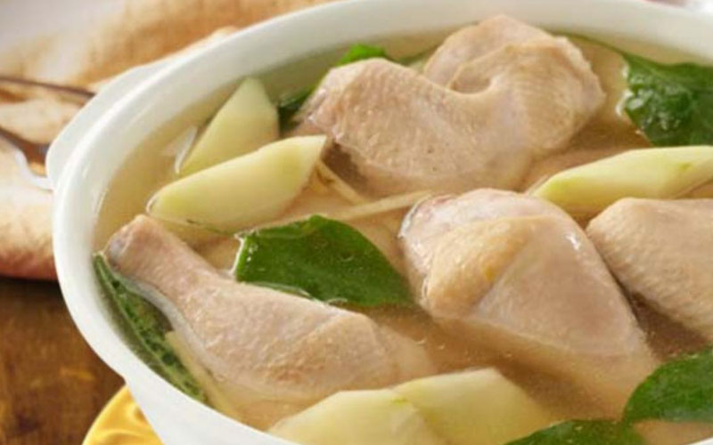

Local Dishes Recipe 4:
Chicken Tinola
- Dish Description:
- Chicken Adobo is a type of Filipino chicken stew. Chicken pieces are marinated in soy sauce and spices, pan-fried, and stewed until tender. The dish gained popularity because of its delicious taste and ease in preparation. It tastes just right and the cooking time is around 30 minutes. The best way to eat chicken adobo is to have it with warm white rice. The combo is simply known as Chicken Adobo and Rice. Pouring some of the adobo sauce over rice before eating is a good idea because it makes it more flavorful.

Ingredients:
- 1 whole chicken cut into serving pieces
- 36 ounces rice washing
- 1/2 piece green papaya cut into wedges
- 1 tablespoon garlic minced
- 1 piece onion chopped
- 1 thumb ginger cut into strips
- 2 tablespoon fish sauce
- 1 cup Hot pepper leaves
- 3 tablespoons fish sauce
- 1/4 teaspoon ground black pepper
Directions:
- Sauté the garlic, onion, and ginger.
- Put-in the chicken and cook until color turns light brown.
- Add the fish sauce. Stir. Pour rice washing into the cooking pot. Let boil. Cover the pot and simmer for 45 minutes. Note: add water if needed.
- Add green papaya. Cook for 5 minutes.
- Add the hot pepper leaves or malunggay leaves. Stir and cook for 1 minute.
- Season with ground black pepper. Note you can also add fish sauce or salt if needed.
- Transfer to a serving bowl. Serve hot. Share and enjoy!